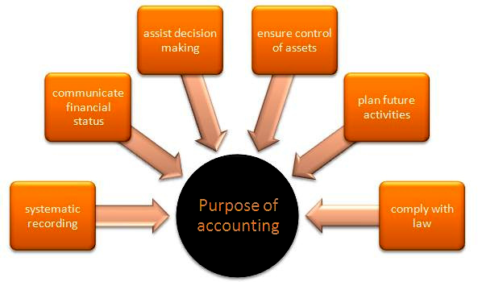
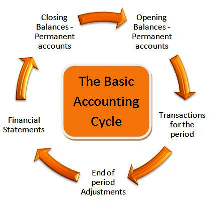
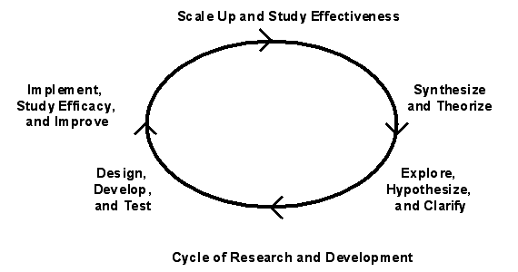

Table of Contents
7. Controlling and Reporting of Intangible Assets
7.1. Introduction to Intangible Assets
7.1.1. Characteristics of Intangible Assets
7.1.1. Valuation of Intangible Assets
7.1.1. Amortization of Intangible Assets
7.2. Types of Intangible Assets
7.2.1. Trademarks
7.2.1. Copyrights
7.2.1. Patents
7.2.1. Goodwill
7.2.1. Franchises and Licenses
7.3. Intangible Asset Impairment
7.3.1. Limited-Life Impairment
7.3.1. Indefinite-Life Impairment
7.3.1. Goodwill Impairment
7.4. Research & Development Cost
7.4.1. What Is R&D?
7.4.1. Accounting for R&D Activity
7.5. Reporting and Analyzing Intangibles
7.5.1. Reporting Intangibles
7.5.1. Reporting R&D Cost
7.5.1. Analyzing Intangible Assets
7. Controlling and Reporting of Intangible Assets
7.1. Introduction to Intangible Assets
7.1.1. Characteristics of Intangible Assets
Intangible assets are identifiable non-monetary assets that cannot be seen, touched, or physically measured.
Learning Objective
Differentiate between legal intangibles and competitive intangibles
Key Points
- Intangible assets are either legal or competitive in nature, and can be very valuable to a company's competitive position.
- Intangible assets can have either identifiable or indefinite useful or legal lives.
- The nature of an intangible asset will determine what costs are initially capitalized and how expenses related to the intangible asset are subsequently recognized.
Key Terms
- monetary
- 1. Of, pertaining to, or consisting of money.
- intangible asset
- 1. Assets that are non-current, non-monetary, and non-physical.
- monetary unit assumption
- the business should have one dollar (or corresponding currency) to record its transactions
Intangible Assets
Intangible assets are defined as identifiable non-monetary assets that cannot be seen, touched or physically measured, and are created through time and effort. Intangible assets are identified separately on a company's financial statements, and come in two primary forms: legal intangibles and competitive intangibles.
Legal intangibles are also known as intellectual property, and include trade secrets, copyrights, patents, and trademarks. An example would be Coca-Cola's drink formula which is a closely held trade secret that only a few employees know; this is an example of an internally developed intangible asset.
Competitive intangibles include collaboration, leverage, structural activities, and customer loyalty. Human capital is the primary source of competitive intangibles.
Goodwill
Goodwill is technically an intangible asset, but is usually listed separately on a company's balance sheet. Goodwill is only recognized through an acquisition of a company or business combination and is calculated as the difference between the amount of money paid to acquire a company and the fair or book value of the acquired company's net assets. Goodwill is a type of intangible asset that is acquired and recorded due to a business acquisition or combination rather unlike other intangible assets, which may be internally developed by the company.
Example
Company $X$ is a car dealership with assets consisting of 10 cars valued at \$100,000, an office valued at \$150,000, and long-term debt valued at \$25,000. Company $X$ 's net assets total $\$100,000 + \$150,000 - \$25,000 = \$225,000$ . Company $X$ has a top-performing sales personnel who are loyal to the company and refuse to leave. Company $Y$ is a larger car dealership in the area and decides to purchase Company $X$ for \$300,000 in order to capitalize on Company $X$ 's sales force. The extra $\$300,000 - \$225,000 = \$75,000$ Â that Company $Y$ paid above Company $X$ 's net assets are recognized by Company $Y$ as Goodwill on their balance sheet.
Useful Lives
Intangible assets have a useful life that is either identifiable or indefinite. Intangible assets with identifiable useful lives are amortized on a straight-line basis over their economic or legal life, which ever is shorter. Intangible assets with indefinite useful lives are assessed each year for impairment. Impairment losses are determined by subtracting the asset's market value from the asset's book/carrying value. If an impairment loss is found it is recognized on the income statement and the intangible asset value is reduced.
Under US GAAP, intangible assets are classified into: Purchased vs. Internally Created Intangibles, and Limited-Life vs. Indefinite-Life Intangibles.
Financial Statement Recognition
Firms initially record intangible assets at cost, however only costs associated with the outright purchase in the acquisition of an intangible asset. Research and development costs incurred during the internal development or self-creation of an intangible asset are not costs that can be capitalized. This then means that some companies have very valuable assets that they are not allowed to recognize on their balance sheets under US GAAP.
7.1.2. Valuation of Intangible Assets
The valuation of intangible assets are primarily derived from transactions involving intangible assets.
Learning Objective
Summarize how to calculate the value of an intangible asset
Key Points
- Intangible assets include items such as patents, copyrights, software, trade secrets, and goodwill. However, not all intangible assets are recognized on the financial statements of a company.
- The costs to acquire and defend intangible assets are used by accountants to establish intangible asset values.
- Valuation is an estimate that is subject to change based on market conditions and advances in technology.
Key Terms
- valuation
- An estimation of something's worth.
- Trademark
- A word, symbol, or phrase used to identify a particular company's product and to differentiate it from other companies' products.
Valuation of Intangible Assets
Valuation models can be used to value intangible assets such as patents, copyrights, software, trade secrets, and customer relationships. Since few sales of intangible assets are observable, benchmarking the value of intangible assets can be difficult. As a result, present value models or estimating of the cost to recreate an intangible asset are often used to is these valuations.
Although they have no physical characteristics, intangible assets have value because of the advantages or exclusive privileges they provide to a business. Intangible assets generally arise from two sources: (1) exclusive privileges granted by governmental authority or by legal contract, such as patents, copyrights, franchises, trademarks and trade names; and (2) superior entrepreneurial capacity or management know-how and customer loyalty , which is called goodwill. Strong customer relationships often generate goodwill. This is a long line of customers queued up at an Apple store.
Intangible assets are initially recorded on financial statements at their purchase price, or the cost of acquiring the asset. If an intangible asset is internally generated, its cost is immediately expensed.
The valuation of intangible assets with identifiable useful lives such as patents, trademarks, and copyrights are initially valued at acquisition costs. The value of these assets can be increased or decreased, based on the outcomes of court proceedings. If a company incurs legal costs to successfully defend an intangible asset, those costs are capitalized and increase the value of the intangible. On the other hand, if a company is unsuccessful in defending an intangible asset, the intangible is worthless and the company is required to write it off.
U.S. GAAP has very specific rules regarding the recognition of intangible assets on financial statements. With that said, a company can still have very valuable intangible assets that are not recognized on its financial statements. From an accounting perspective, intangible asset valuation is primarily derived from acquisition costs. An acquisition identifies the value one party was willing to pay for an asset while at the same time identifying the value another party was willing to accept to relinquish that asset.
Goodwill is an excellent example of how intangible assets are valued. Let's say Company A has net assets equal to 150,000 and is acquired by Company B for 200,000. Why would Company B pay a 50,000 premium? Goodwill! Company B believes that Company A has value in excess of their net identifiable assets, and was willing to pay an additional 50,000 to acquire it. The 50,000 value of Company A's goodwill was derived from a transaction.
7.1.3. Amortization of Intangible Assets
The costs of intangible assets with identifiable useful lives are amortized over their economic/legal life.
Learning Objective
Explain how to amortize an intangible asset
Key Points
- Intangible assets are amortized using the straight line amortization method.
- Goodwill is an intangible asset that is not amortized, but is instead tested for impairment on an annual basis.
- The economic or useful life of an intangible asset is based on an estimate made by management and is subject to change under certain market conditions.
Key Terms
- goodwill
- The value of an asset that is considered intangible but has a quantifiable "value" in a business. For example, a reputation the firm enjoys with its clients.
- Indefinite
- Without limit; forever, or until further notice; not definite
- impairment
- When the carrying value exceeds the fair value.
Amortization of Intangible Assets
Under US GAAP, the cost of intangible assets are either amortized over their respective useful/legal lives, or are tested for impairment on an annual basis. Amortization is the systematic write-off of the cost of an intangible asset to an expense, which effectively allocates a portion of the intangible asset's cost to each accounting period in the economic or legal life of the asset (an amortization expense). Only recognized intangible assets with finite useful lives are amortized. This differs from tangible assets which are depreciated (resulting in a depreciation expense) over their useful life.
Useful Lives
Intangible assets have a useful life that is either identifiable or indefinite. Intangible assets with identifiable useful lives are amortized on a straight-line basis over their economic or legal life, whichever is shorter. The finite useful life of an intangible asset is considered to be the length of time it is expected to contribute to the cash flows of the reporting entity. Pertinent factors that should be considered in estimating the useful lives of intangible assets include legal, regulatory, or contractual provisions that may limit the useful life.
Costs of Intangible Assets
Firms may only include the immediate purchase costs of an intangible asset, which do not include the costs associated with internal development or self-creation of the asset. If an intangible asset is internally generated in its entirety, none of the costs related to the asset are capitalized.
Straight Line Amortization vs. Testing for Impairment
An intangible asset is amortized if the asset has an identifiable useful life. The annual expense recognized as a result of straight line amortization is simply the cost of the intangible asset divided by the number of years in it's estimated useful life. The amortization expense recognized each year will be the same, and the value of the intangible asset will be 0 at the end of its useful life
Example:
Company X purchases a patent for \$17,000, which enables the owner to manufacture, sell, lease, or otherwise benefit from an invention for 17 years. Company X would recognize an intangible asset valued at \$17,000 and amortize that cost over 17 years. Each year, Company X will recognize an expense of \$1,000 in addition to decreasing the value of the patent reported on the balance sheet by \$1,000. See the figure below for an example of a U.S. patent .
Scenario A: After 5 years Company X is sued for patent infringement and is required to hire a lawyer. The patent lawyer charges \$10,000 and is successful in defending Company X's patent. The \$10,000 spent to defend the patent is capitalized to the value of the patent on Company X's balance sheet and then amortized over the remaining 12 years of the patent's legal life.
Scenario B: After 5 years Company X realizes that their patent is worthless due to advances in technology. As a result of the useful life of their patent being reduced from 17 years to just 5 years, the remaining unamortized value of \$12,000 is expensed and the patent is written down to a value of \$0.
Goodwill is an example of an intangible asset that has an indefinite useful life, and is therefore tested for impairment on an annual basis as opposed to being amortized on a straight line basis. A company cannot purchase goodwill by itself; it must buy an entire business or a part of a business to obtain the accompanying intangible asset. Under current US GAAP, firms are required to compare the fair value of reporting units to the respective reporting unit's book value, which is calculated as assets plus goodwill less liabilities. If the fair value of the reporting unit is less than its carrying value, goodwill has been impaired. An impairment loss is recognized on the income statement and the goodwill account is reduced. The impairment loss is calculated by subtracting the fair value of a reporting unit's net assets from the reporting unit's carrying value.
7.2. Types of Intangible Assets
7.2.1. Trademarks
A trademark is an intangible asset legally preventing others from using a business's logo, name, or other branding.
Learning Objective
Summarize how a company would value a trademark
Key Points
- As a trademarks are used to identify a specific type of business or service, they are important for businesses that want to protect their branding.
- A trademark's value for accounting purposes equals what it cost to acquire.
- Trademarks are not amortized, but if one loses its value, it can be impaired.
Key Terms
- Trademark
- A word, symbol, or phrase used to identify a particular company's product and differentiate it from other companies' products.
- impairment
- A downward revaluation, a write-down.
Trademarks
A trademark is an image, word, phrase, logo or combination of those elements used to identify a specific type of business or service. A trademark allows a customer to instantly identify a product and associate the item with a response regarding its quality and price. If developed properly, a trademark will allow customers to make a positive connection with the product to which it is attached. In short, a trademark is a visual representation of a business's brand or logo.
To protect the work that it puts into developing its brand, a company will obtain a trademark. The legal protection of a trademark prevents other businesses from using the specific image and text associated with the brand. In some circumstances, a business may obtain a "common law" trademark. This offers the business some legal protection. Generally, American businesses will register their logo with the U.S. Patent and Trademark Office. This offers them more legal protection, but can also be more expensive to obtain.
A trademark is an intangible asset, as it's a nonphysical item granting a business the legal right to exclusively use a logo or other item. This means it is reported on a business's balance sheet.
Valuing Trademarks
Trademarks have enormous value to businesses, although that may not translate to a business's financial report. A business can only value any intangible asset, including a trademark, based on what it cost to acquire. For example, if a business purchased a product line from another company, the trademark associated with that product could have a high value on the acquiring company's books.
The value of a trademark can also be quite low. All costs associated with creating the logo or promoting its public awareness are not included in the trademark's value if the business did all these tasks internally. As a result, some trademarks could have no value on a company's books despite a significant investment by the business.
Annual Review of Trademarks
Some intangible assets are amortized over time. This means that the value decreases every year as an expense for using the item. The amount the value of the asset decreases also decreases the business's income for that year. Trademarks are not amortized since each is considered to have an indefinite life, meaning a perception exists that a trademark can retain its value forever.
However, a business must reassess the value of its trademarks annually. If a business determines that one of its trademarks is worth less than it was a year ago, the value of the intangible asset must be impaired. When an impairment occurs, the value of the asset must be decreased to its current market value. The difference between the current value of the trademark and its former value must be recorded as a financial loss.
7.2.2. Copyrights
A copyright is an amortizable, intangible asset that is used to secure the legal right to publish a work of authorship.
Learning Objective
Describe how to value a copyright
Key Points
- A work of authorship can include poetry, novels, computer software, movies, plays, songs and architectural drawings.
- Most copyrights last for the duration of an author's life plus 70 years.
- The value of a copyright equals the cost it took to secure the legal copyright on a work the business created, or the price the business paid to purchase the copyright from the original owner.
- Every year, the company must amortize the value of the copyright by an amount equal to the original value of the copyright divided by the projected amount of time that the copyright will be able to generate revenue.
Key Terms
- amortization
- The cost distribution of an intangible asset, like an intellectual property right, over the projected useful life of the asset.
- Copyright
- the right by law to be the entity which determines who may publish, copy and distribute a piece of writing, music, picture or other work of authorship
Copyrights
A copyright is a legal protection preventing others from publishing or reproducing works of authorship. A work of authorship can include poetry, novels, plays, computer software and architectural drawings. A person who creates a work of authorship has a copyright the moment the work is created and is fixed in a form that either a person or machine can read. As a result, an author does not have to register their work with the U.S. Copyright Office. Formally registering a work is generally recommend because it provides additional legal protection against those who would copy the work.
A copyright only lasts so long, but how long it lasts depends on several factors. Generally, most copyrights last for the duration of an author's life plus 70 years. If it is an anonymous work or something done for hire, the copyright lasts for 95 years after it was published or 120 years from the year it was created.
While a copyright is associated with a tangible work, since it is a legal right it is also classified as an intangible asset and can be included on a business's balance sheet.
Valuing a Copyright
The value a business attaches to a copyright depends on how it was acquired. If the business developed the work in question, the value of the copyright is equal to the cost the business incurred securing the copyright. This would include any legal or application fees it might have incurred to obtain the copyright.
If the business purchased the copyright from another company, the business will record the acquired asset at it acquisition cost.
Amortizing a Copyright
Since a copyright eventually terminates, it is amortized. This means that every year the value of the copyright on the company's books will decrease. The business will record an amortization expense to reflect the decrease in the asset's value. Generally, an intangible asset like a copyright is amortized via the straight-line method. This means that the book value of the copyright is divided by the useful life of the copyright to determine the amortization amount. The useful life determines how long the business expects the copyright to provide it revenue, and therefore may not equal the full term of the copyright.
Every year, the amortization amount is subtracted from the value of the copyright and is listed as an expense. This continues until the value of the copyright equals zero.
7.2.3. Patents
A patent is an amortizable, intangible asset that grants a business the sole right to manufacture and sell an invention.
Learning Objective
Explain how a company values a patent
Key Points
- There are three types of patents. A utility patent is for processes, machines, and articles of manufacture. A design patent is used for any new, original ornamental design that can be affixed to an item of manufacture. A plant patent is granted to anyone that has invented or created a new plant.
- A U.S. patent lasts for 20 years.
- The value of a patent depends on how it was acquired. If developed internally, the book value of the patent could be quite low since all R&D expenditures are listed as expenses when incurred. If the business purchased the patent, its value equals the acquisition cost.
- The value of the patent must be amortized over its useful life, which can be no longer than 20 years.
Key Terms
- book value
- The value of an asset as reflected on an entity's accounting books, net of depreciation, but without accounting for market value appreciation.
- patent
- A declaration issued by a government agency declaring someone the inventor of a new invention and having the privilege of stopping others from making, using, or selling the claimed invention.
- incur
- To render somebody liable or subject to.
Patents
A patent is a legal license granting its holder the exclusive right to make, use, or sell a specific invention. There are three types of patents. A utility patent is for processes, machines, and articles of manufacture. The light bulb and the Model T would have been utility patents. A design patent is used for any new, original ornamental design that can be affixed to an item of manufacture, such as a hood ornament for a Model T. A plant patent is granted to anyone that has invented or created a new plant, such as a unique strain of corn.
A U.S. patent currently lasts 20 years. Despite the fact that a patent is connected to a specific type of item, a patent represents a legal right and not a tangible item. A patent is classified as an intangible asset and is listed on a company's balance sheet.
Valuing a Patent
The value of a patent that a company would record on its books depends on how it acquired the patent. If the business developed the invention internally, all the research and development costs associated with that item would have been listed as an expense as those fees were incurred. Therefore, the initial value of an internally developed patent could be quite low.
If the business purchased the patent from the original holder, the value of the patent equals the acquisition cost.
The value of the patent may be increased if a patent holding company defends its rights to the invention in a lawsuit. If the company uses an outside law firm, all fees the business pays to the firm to defend the patent will be included as part of the patent's book value.
Amortizing a Patent
Since a patent is only valid for a limited number of years, a business is required to amortize it. The process of amortization requires decreasing the value of the asset annually by an amount equal to the value of the asset divided by the number of years of the patent's useful life. The useful life of the patent can be no longer than how much time is left on the patent's term, but should reflect the period that the underlying invention can generate revenue for the business that owns it. Every year the business records a decrease in the patent's value, it must also record a corresponding amortization expense equal to the decrease.
For example, assume a business acquires a patent that has 15 years left on its term for 1 million dollars. However, the invention the patent secures will only generate revenue for ten years. For the next ten years, the company must decrease the value of the asset by 100,000. To ensure the books are balanced, the business must also record a \$100,000 amortization expense for the next ten years.
7.2.4. Goodwill
Goodwill is an intangible asset that equals an acquired company's purchase price minus the value of its net assets when it was acquired.
Learning Objective
Describe how a company values Goodwill
Key Points
- A company may only record goodwill on its balance sheet in connection to a business or business segment it acquired.
- Goodwill = acquisition price - net assets.
- Goodwill is not amortized, but it can be impaired if the present value of the future revenues of the related business segment are less than the net assets (including goodwill) of the business segment.
Key Terms
- net assets
- The value of a business's assets minus the value of its liabilities.
- impair
- To decrease the value of an intangible asset.
- goodwill
- Represents the difference between the firm's total net assets and its market value; the amount is recorded at time of acquisition.
Goodwill
The value of a business is not always defined by what assets it owns and what it owes. A successful business will develop customer loyalty and an overall positive reputation in its community, which will cause its market value to be greater than its book value. A company may also generate a higher value if it proves over time that it can generate superior revenues than its competition through managerial expertise, its reputation within its business sector, and other company attributes.
The difference between the value of a company as reflected in its balance sheet and its market value is known as its goodwill. Accounting goodwill is the excess value of a firm's net assets and is recorded at time of business acquisition or combination. Goodwill is not associated with a physical object that the business owns, so it is an intangible asset and is listed on a company's balance sheet. In comparison, economic goodwill refers to company attributes that are hard to quantify, such as brand loyalty, brand recognition, company innovation, and executive talent .
Valuing Goodwill
A company can list goodwill on its balance sheet when it acquires another business at a higher cost than what the assets and liabilities on the acquired company's balance sheet dictate. In short, goodwill equals the acquisition price minus net assets.
Say a business was purchased for 100 million. Its assets were worth 80 million but it had 30 million in liabilities. The acquired business' assets would be equal to 50 million, and the acquiring business would record 50 million worth of goodwill on its balance sheet.
However a business may not record goodwill that it generates for itself. Using the same example, assume the business was not acquired, but it was worth 100 million and still had 80 million of assets with 30 million in liabilities. The business would not be able to record the 50 million of goodwill on its own balance sheet. Goodwill can only be recorded when an entire business or an entire section of a business is purchased at a price greater than the value of its assets.
Annual Review of Goodwill
It used to be that goodwill was amortized. This meant that the value of goodwill was decreased annually, with the business recording a loss equal to the amount of the decrease in value. As of 2001, goodwill is no longer amortized.
Every year the value of goodwill must be evaluated by the business that owns it. The company must determine the present value of all of the future revenues of the business segment associated with the goodwill. If the present value of those revenues equal or exceed the value of the business segment's carrying value, or its total assets (including goodwill) minus assets, the business does not have to make any changes.
If the present value of the future revenues is less than the business segment's carrying value, the business must impair, or decrease the value, of the goodwill account. Goodwill must be decreased so that the segment's carrying value equals the present value of its revenues. If the the total value of goodwill is not enough to make up the difference, the goodwill balance must be set to zero. A business cannot have a negative goodwill balance.
Any impairment of goodwill is recognized as a loss for year of the decrease and reported on the income statement.
7.2.5. Franchises and Licenses
Franchises and licenses are intangible assets that legally entitle a business to sell a product or service developed by another entity.
Learning Objective
Explain how a company values a franchise or license
Key Points
- If a franchisee makes periodic payments to the franchisor, it does not record a franchise asset. If the contract requires that a lump sum be paid up front to secure the franchise rights for several years, the franchisee would record a franchise asset on its balance sheet.
- A business only records a license asset on its balance sheet if the term of the license ends after the date of the balance sheet.
- Amortizing only applies if the business records an asset. The amortization rate is calculated by dividing the initial value of the asset by its useful life. Every accounting period, the business decreases the value of the asset by the amortization rate and records an expense equal to the rate.
Key Terms
- license
- the legal terms under which a person is allowed to use a product
- franchise
- The authorization granted by a company to sell or distribute its goods or services in a certain area.
- franchisee
- A holder of a franchise; a person who is granted a franchise.
- franchisor
- A company which or person who grants franchises.
A franchise is a contract that grants a business the right to operate using the name and products of an established brand. A franchisor will develop the brand, produce goods and develop marketing campaigns for its products. A franchisee will then purchase the rights to sell the franchisor's products in a given area and benefit from the franchisor's marketing efforts. The franchisor makes money by selling rights to franchisees, while the franchisee profits by selling directly to customers. A common industry that uses franchising is fast food.
A license is similar to a franchise, in that it grants someone the right to legally use someone else's intellectual property or gooda. This license will contain terms that will define how the purchaser can use the product and whether she can share it. A common example of a license a business might purchase is for software.
Valuing Franchises and Licenses
How a franchise is recorded on a balance sheet depends on the conditions of the contract. If a franchisee makes periodic payments to the franchisor over the contract's term, the franchisee does not record a franchise asset. Instead, the franchisee records a franchise expense when she pays the franchise fee.
If the contract requires that a lump sum be paid up front to secure the franchise rights for several years, the franchisee would record a franchise asset on its balance sheet. Therefore, the value of the franchise asset equals what it cost to acquire.
The same rules apply to a license. If a business must pay licensing fees on a monthly or on an annual basis that coincides with the end of the business's fiscal year, the business does not record a license asset. The fees that the business paid for those licenses are included as an expense. If the license is for multiple years or accounting periods and is acquired by paying an initial fee, the license is recorded as an asset on the balance sheet and its value equals what it cost to acquire the license.
Amortizing Franchises and Licenses
Amortizing is a term that only applies if there is a franchise or license asset. Amortization is the process of writing off the cost of an asset over its useful life. Useful life is the amount of time that a business can generate revenues from the asset. For a franchise, the useful life is generally the length of the franchise contract. The useful life of a license is how long it grants the holder the exclusive right to use the underlying product.
The amortization rate is calculated by dividing the initial value of the asset by its useful life. Depending on when the balance sheet is issued, the useful life is presented as a number of months, quarters, or years. Every accounting period, the value of the asset is decreased by the amortization rate. The business also records an expense equal to the amortization rate every accounting period.
7.3. Intangible Asset Impairment
7.3.1. Limited-Life Impairment
Limited-life intangibles are amortized throughout the useful life of the intangible asset using either the units of activity or the straight-line method.
Learning Objective
Summarize how to calculate the impairment on a limited life asset
Key Points
- Limited-life intangibles are intangible assets with a limited useful life, such as copyrights, patents and trademarks.
- Intangible assets are non-monetary assets that cannot be seen, touched or physically measured. Intangible assets are created through time and effort, and are identifiable as separate assets.
- Non-physical or "intangible" assets are amortized to reflect the change in their value due to use, expiration or obsolescence over time.
Key Terms
- asset
- Items of ownership convertible into cash; total resources of a person or business, as cash, notes and accounts receivable; securities and accounts receivable, securities, inventories, goodwill, fixtures, machinery, or real estate (as opposed to liabilities).
- intangible
- Incapable of being perceived by the senses; incorporeal.
- amortization
- The distribution of the cost of an intangible asset, such as an intellectual property right, over the projected useful life of the asset.
- straight-line method of amortization
- debt paid off with regular, equal sized payments
- straight-line method
- the company charges the same amount to depreciation each year over that period until the value shown for the asset has reduced from the original cost to the salvage value
Example
- A software company has a patent valued at \$10 million with a useful life of 40 years. Due to market conditions, the company believes the patent's value has decreased and tests it for impairment at the end of the year. Year end calculations reveal the patent is valued at \$8 million and an impairment loss of \$2 million is recorded as a debit to Loss on Patent Impairment on the income statement and a credit to Accumulated Impairment Losses on the balance sheet (disclosed as a contra asset account to the intangible asset). As a result of the impairment, the amortization expense on the patent should be adjusted to reflect the new value.
Limited-Life Impairment
Intangible assets are non-monetary assets that cannot be seen, touched, or physically measured. Intangible assets are created through time and effort, and are identifiable as separate assets. They are classified into categories: either purchased vs. internally created intangible assets; and limited-life or indefinite-life intangible assets.
The two primary forms of intangibles are legal intangibles, which includes trade secrets, copyrights, patents, and trademarks (also referred to as Intellectual Property) and competitive intangibles, which includes knowledge activities, collaboration activities, leverage activities, and structural activities. Limited-life intangibles are intangible assets with a limited useful life, such as copyrights, patents and trademarks
Intangible assets are amortized to reflect their consumption, expiry, obsolescence or other decline in value as a result of use or the passage of time, process which is similar to the deprecation process for tangible assets. Intangible assets can have either a limited or an indefinite useful life. Intangible assets with a limited-life are amortized on a straight-line basis over their economic or legal life, based on whichever is shorter. Examples of intangible assets with a limited-life include copyrights and patents. Only intangible assets with an indefinite life are reassessed each year for impairment.
Limited-life intangibles are systemically amortized throughout the useful life of the intangible asset using either units of activity method or straight-line method. The amortization amount is equal to the difference between the intangible asset cost and the asset residual value. That calculated amount is credited to either the appropriate intangible asset account or accumulated amortization account .

A bond's discount amount must be amortized over the term of the bond.
Reversal of Impairment Loss
When an intangible asset's impairment reverses and value is regained, the increase in value is recorded as a gain on the income statement and reduction to accumulated impairment loss on the balance sheet, up to the amount of impairment loss recorded in prior periods. Increases in value in excess of prior impairment loss are debited directly to the asset and credited to a revaluation reserve account in the equity section of the balance sheet. Asset amortization for future periods should be adjusted due to the increase in value.
7.3.2. Indefinite-Life Impairment
Because Indefinite-life tangibles continue to generate cash they can't be amortized; they must be evaluated for impairment yearly.
Learning Objective
Summarize how to impair indefinite life intangibles
Key Points
- Examples of Indefinite-life intangibles are goodwill, trademarks, and perpetual franchises.
- Instead of amortization, indefinite-life assets are evaluated for impairment yearly.
- The Impairment cost is calculated as: Carrying value - Recoverable amount.
Key Terms
- intangible
- Incapable of being perceived by the senses; incorporeal.
- impairment
- When the carrying value exceeds the fair value.
- Indefinite
- Without limit; forever, or until further notice; not definite
Example
- A software company has a trademark valued at \$10 million with an indefinite useful life. Due to market conditions, the company believes the trademark's value has decreased and tests it for impairment at the end of the year. Year end calculations reveal the trademark is valued at \$8 million and an impairment loss of \$2 million is recorded as a debit to Loss on Trademark Impairment on the income statement and a credit to Accumulated Impairment Losses on the balance sheet (disclosed as a contra asset account to the intangible asset).
Indefinite-Life Impairment
In accounting, intangible assets are defined as non-monetary assets that cannot be seen, touched or physically measured.
Under US GAAP, intangible assets are classified into: Purchased vs. internally created intangibles, and Limited-life vs. indefinite-life intangibles.
Since intangible assets are typically expensed according to their respective life expectancy, it is important to understand the difference between limited-life intangible assets and indefinite-life intangible assets. Intangible assets with identifiable useful lives (limited-life) include copyrights and patents. These items are amortized on a straight-line basis over their economic or legal life, whichever is shorter.
Some examples of indefinite-life intangibles are goodwill, trademarks, and perpetual franchises. Indefinite-life tangibles are not amortized because there is no foreseeable limit to the cash flows generated by those intangible assets. Instead of amortization, indefinite-life assets are evaluated for impairment yearly. If an impairment has occurred, then a loss must be recognized.
{kind=link}
Properly reporting items is important to the accounting cycle.
An Impairment cost must be included under expenses when the carrying value of a non-current asset exceeds the recoverable amount. The Impairment cost is calculated as:
Carrying value - Recoverable amount
The carrying amount is defined as the value of the asset as displayed on the balance sheet. The recoverable amount is the higher of either the asset's future value for the company or the amount it can be sold for, minus any transaction cost.
Intangibles can also be classified as: legal intangibles or competitive intangibles. Legal intangibles are also known as Intellectual Property. They include trade secrets, copyrights, patents, and trademarks. Competitive intangibles comprise knowledge activities, know-how, collaboration activities, leverage activities, and structural activities.
Reversal of Impairment Loss
When an intangible asset's impairment reverses and value is regained, the increase in value is recorded as a gain on the income statement and reduction to accumulated impairment loss on the balance sheet, up to the amount of impairment loss recorded in prior periods. Increases in value in excess of prior impairment loss is debited directly to the asset and credited to a revaluation reserve account in the equity section of the balance sheet. According to IAS 36, reversal of impairment losses for goodwill are not allowed.
7.3.3. Goodwill Impairment
Goodwill is an intangible asset that is tested yearly for impairment; it is not amortized.
Learning Objective
Explain how to calculate impairment on goodwill
Key Points
- Goodwill is the value of an asset that is considered intangible but has a quantifiable "prudent value" in a business.
- A firm's reputation with its clients is an example of goodwill.
- If the fair value is less than carrying value (impaired), the goodwill value will need to be reduced so that the fair value is equal to the carrying value.
Key Terms
- impairment
- When the carrying value exceeds the fair value.
- asset
- Items of ownership convertible into cash; total resources of a person or business, as cash, notes and accounts receivable; securities and accounts receivable, securities, inventories, goodwill, fixtures, machinery, or real estate (as opposed to liabilities).
- goodwill
- The value of an asset that is considered intangible but has a quantifiable "value" in a business. For example, a reputation the firm enjoys with its clients.
Example
- A software company has net assets valued at \$1 million, but the company's overall value (including brand, customers, intellectual capital) is valued at \$10 million. Upon purchase, the buyer records \$9 million in goodwill and tests it for impairment at the end of the year. Year end calculations reveal the goodwill is valued at \$8 million and an impairment loss of \$1 million is recorded as a debit to Loss on Goodwill Impairment on the income statement and a credit to Accumulated Impairment Losses on the balance sheet (disclosed as a contra asset account to goodwill).
Business Goodwill
In accounting, goodwill is the value of an asset that is considered intangible but has a quantifiable "prudent value" in a business. For example, goodwill could be the reputation the firm enjoys with its clients. While goodwill is technically an intangible asset, it is usually listed as a separate item on a company's balance sheet .
{kind=link}
Correctly reporting intangible assets is important to the accounting cycle.
Accounting for Goodwill
Instead of deducting the value of goodwill annually over a period of maximal 40 years ( amortization ), companies are now required to determine the fair value of the reporting units, using the present value of future cash flow , and compare it to their carrying value (book value of assets + goodwill - liabilities. ).
If the fair value is less than carrying value (impaired), the goodwill value will need to be reduced so that the fair value is equal to carrying value. The impairment loss is reported as a separate line item on the income statement, and new adjusted value of goodwill is reported in the balance sheet.
Impairment of Goodwill
If there is an indication that the book value of goodwill is greater than the recoverable value of net assets, an assessment of the recoverable value is made, and if the suspicion is correct, then an impairment expense is recorded. Goodwill's value on the balance sheet is reported at net of accumulated impairment loss, a contra asset account; the current impairment loss is reported on the income statement.
An impairment cost must be included under expenses when the carrying value of a non-current asset on the balance sheet exceeds the asset's market value subtracted by any transaction costs (recoverable amount). The impairment cost is calculated as follows: carrying value - recoverable amount.
The carrying amount is defined as the value of the asset as it is displayed on the balance sheet. The recoverable amount is the higher of either the asset's future value for the company or the amount it can be sold for, minus any transaction cost.
According IAS 36, reversal of goodwill impairment losses are not allowed.
7.4. Research & Development Cost
7.4.1. What Is R&D?
The primary function of R&D is to develop new products or discover and create new knowledge about scientific and technological topics.
Learning Objective
Summarize research and developments role within a corporation
Key Points
- The primary function of R&D is to develop new products or discover and create new knowledge about scientific and technological topics for the purpose of uncovering and enabling development of valuable new products, processes, and services.
- New product design and development is more often than not a crucial factor in the survival of a company. In an industry that is changing fast, firms must continually revise their design and range of products.
- In the U.S., a typical ratio of research and development for an industrial company is about 3.5% of revenues. A high technology company such as a computer manufacturer might spend 7%.
Key Terms
- research
- Diligent inquiry or examination to seek or revise facts, principles, theories, and applications; laborious or continued search after truth.
- ROI
- The return on investment (ROI) is the ratio of money gained or lost (whether realized or unrealized) on an investment relative to the amount of money invested.
- development
- The process of developing; growth, directed change.
Example
- In the U.S., a typical ratio of research and development for an industrial company is about 3.5% of revenues. A high technology company such as a computer manufacturer might spend 7%. Although Allergan (a biotech company) tops the spending table with 43.4% investment, anything over 15% is remarkable and usually gains a reputation for being a high technology company. Companies in this category include pharmaceutical companies such as Merck & Co. (14.1%) or Novartis (15.1%), and engineering companies like Ericsson (24.9%). Such companies are often seen as credit risks because their spending ratios are so unusual.
What is R&D?
The term R&D or research and development refers to a specific group of activities within a business. The activities that are classified as R&D differ from company to company, but there are two primary models. In one model, the primary function of an R&D group is to develop new products; in the other model, the primary function of an R&D group is to discover and create new knowledge about scientific and technological topics for the purpose of uncovering and enabling development of valuable new products, processes, and services. Under both models, R&D differs from the vast majority of a company's activities which are intended to yield nearly immediate profits or immediate improvements in operations and involve little uncertainty as to the return on investment (ROI). The first model of R&D is generally staffed by engineers while the second model may be staffed with industrial scientists. R&D activities are carried out by corporate and governmental entities.
R&D's Role
New product design and development is more often than not a crucial factor in the survival of a company. In an industry that is changing fast, firms must continually revise their design and range of products. This is necessary due to continuous technological change and development as well as other competitors and the changing preference of customers. Without an R&D program, a firm must rely on strategic alliances, acquisitions, and networks to tap into the innovations of others.
In the U.S., a typical ratio of research and development for an industrial company is about 3.5% of revenues. A high technology company such as a computer manufacturer might spend 7%. Although Allergan (a biotech company) tops the spending table with 43.4% investment, anything over 15% is remarkable and usually gains a reputation for being a high technology company. Companies in this category include pharmaceutical companies such as Merck & Co. (14.1%) or Novartis (15.1%), and engineering companies like Ericsson (24.9%). Such companies are often seen as credit risks because their spending ratios are so unusual.
Generally such firms prosper only in markets whose customers have extreme needs, such as medicine, scientific instruments, safety-critical mechanisms (aircraft), or high technology military armaments. The extreme needs justify the high risk of failure and consequently high gross margins from 60% to 90% of revenues. Gross profits will be as much as 90% of the sales cost, with manufacturing costing only 10% of the product price, because so many individual projects yield no exploitable product. Most industrial companies get only 40% of revenues.
History of R&D
Research and development costs are costs incurred in a planned search for new knowledge and in translating such knowledge into new products or processes. Prior to 1975, businesses often capitalized research and development costs as intangible assets when future benefits were expected from their incurrence. Due to the difficulty of determining the costs applicable to future benefits, many companies expensed all such costs as incurred. Other companies capitalized those costs that related to proven products and expensed the rest as incurred.
As a result of these varied accounting practices, in 1974 the Financial Accounting Standards Board in Statement No. 2 ruled that firms must expense all research and development costs when incurred, unless they were directly reimbursable by government agencies and others. Immediate expensing is justified on the grounds that (1) the amount of costs applicable to the future cannot be measured with any high degree of precision; (2) doubt exists as to whether any future benefits will be received; and (3) even if benefits are expected, they cannot be measured. Thus, research and development costs no longer appear as intangible assets on the balance sheet. The Board applies the same line of reasoning to other costs associated with internally generated intangible assets, such as the internal costs of developing a patent.
7.4.2. Accounting for R&D Activity
Research and development costs no longer appear as intangible assets on the balance sheet, but as expenses on the income statement.
Key Points
- Research and development costs no longer appear as intangible assets on the balance sheet. The Board applies the same line of reasoning to other costs associated with internally generated intangible assets, such as the internal costs of developing a patent.
- Immediate expensing is justified on the following grounds: the amount of costs applicable to the future cannot be measured with any high degree of precision, doubt exists as to whether any future benefits will be received, and even if benefits are expected, they cannot be measured.
- In the U.S., a typical ratio of research and development for an industrial company is about 3.5% of revenues. A high technology company such as a computer manufacturer might spend 7%.
Key Terms
- research
- Diligent inquiry or examination to seek or revise facts, principles, theories, and applications; laborious or continued search after truth.
- intangible
- Incapable of being perceived by the senses; incorporeal.
- incur
- To render somebody liable or subject to.
Accounting for Research and Development Activity
In general, research and development (R&D) activities are conducted by specialized units or centers belonging to a company, or can be outsourced to contract research organizations, universities, or state agencies . In the context of commerce, research and development normally refers to future-oriented, long-term activities in science or technology, using similar techniques to scientific research but directed toward desired outcomes and with broad forecasts of commercial yield.
{kind=link}
Cycle of Research and Development, from "Research and Evaluation on Education in Science and Engineering (REESE), Program Solicitation NSF 09-601"
In the United States, a typical ratio of research and development for an industrial company is about 3.5% of revenues. A high technology company such as a computer manufacturer might spend 7%. Although Allergan (a biotech company) tops the spending table with 43.4% investment, anything over 15% is remarkable and usually gains a reputation for being a high technology company. Companies in this category include pharmaceutical companies such as Merck & Co. (14.1%) or Novartis (15.1%), and engineering companies like Ericsson (24.9%). Such companies are often seen as credit risks because their spending ratios are so unusual.
Research and development costs are the costs incurred in a planned search for new knowledge and in translating such knowledge into new products or processes. Prior to 1975, businesses often capitalized research and development costs as intangible assets when future benefits were expected from their incurrence. Due to the difficulty of determining the costs applicable to future benefits, many companies expensed all such costs as incurred. Other companies capitalized those costs that related to proven products and expensed the rest as incurred.
As a result of these varied accounting practices, in 1974 the Financial Accounting Standards Board in Statement No. 2 ruled that firms must expense all research and development costs when incurred, unless they were directly reimbursable by government agencies and others. Immediate expensing is justified on the following grounds:
- The amount of costs applicable to the future cannot be measured with any high degree of precision
- Doubt exists as to whether any future benefits will be received
- Even if benefits are expected, they cannot be measured
Research and development costs thus no longer appear as intangible assets on the balance sheet. The Board applies the same line of reasoning to other costs associated with internally generated intangible assets, such as the internal costs of developing a patent.
R&D As an Administrative cost
Administrative costs are non-manufacturing costs that include the costs of top administrative functions and various staff departments such as accounting, data processing, and personnel. Executive salaries, clerical salaries, office expenses, office rent, donations, research and development costs, and legal costs are also administrative costs. As with selling costs, all organizations have administrative costs.
7.5. Reporting and Analyzing Intangibles
7.5.1. Reporting Intangibles
Intangible assets are either recorded at cost or expensed as they are created.
Learning Objective
Explain how to value an intangible asset for reporting purposes
Key Points
- The most common types of intangibles are patents, copyrights, franchises or licenses, trademarks or trade names, and goodwill.
- In most cases, intangible assets provide services over a period of years.
- Intangibles purchased from another party are recorded at cost.
- The cost of created intangibles is generally expensed as incurred.
- Intangible assets derive their value from the rights and privileges granted to the company using them.
Key Terms
- Capitalized
- To capitalize is to treat costs as capital not an expense. The capital expenditure costs are then amortized or depreciated over the life of the asset.
- Intangibles
- Things that are recognized but not easily quantified.
Intangibles
Intangible assets lack physical existence. Unlike tangible assets such as property, plant, and equipment, intangible assets derive their value from the rights and privileges granted to the company using them.
They are not financial instruments. Assets such as bank deposits, accounts receivable, and long-term investments in bonds and stocks lack physical substance, but are not classified as intangible assets. These assets are financial instruments and derive their value from the right or claim to receive cash or cash equivalents in the future.
In most cases, intangible assets provide services over a period of years. As a result, they are normally classified as long-term assets. The most common types of intangibles are patents, copyrights, franchises or licenses, trademarks or trade names, and goodwill.
Valuation and Accounting
Intangibles purchased from another party are recorded at cost . Cost includes all costs of acquisition and expenditures necessary to make the intangible asset ready for its intended useâfor example, purchase price, legal fees, and other incidental expenses.
If intangibles are acquired for stock or in exchange for other assets, the cost of the intangible is the fair value of the consideration given or the fair value of the intangible received, whichever is more clearly evident.
The accounting treatment for purchased intangibles closely parallels that followed for purchased tangible assets. The cost of created intangibles is generally expensed as incurred. Therefore, even though a company may incur substantial research and development costs to create an intangible, these costs are expensed.
Various reasons are given for this approach. Some argue that the costs incurred internally to create intangibles bear no relationship to their real value. Therefore, expensing these costs is appropriate. Others note that with a purchased intangible, a reliable number for the cost of the intangible can be determined. With internally developed intangibles, it is difficult to associate costs with specific intangible assets. And others argue that due to the underlying subjectivity related to intangibles, a conservative approach should be followedâthat is, expense as incurred.
The accounting for intangible assets depends on whether the intangible has a limited or an indefinite life. The costs of acquiring and defending a copyright may be capitalized, but the research and development costs involved must be expensed as incurred. Generally, the useful life of the copyright is less than its legal life. The costs of the copyright should be allocated to the years in which the benefits are expected to be received. The difficulty of determining the number of years over which benefits will be received normally encourages the company to write these costs off over a fairly short period of time.
7.5.2. Reporting R&D Cost
Expense R&D, unless items have alternative future uses, then allocate as consumed, or capitalize and depreciate as used.
Learning Objective
Summarize how to report research and development costs on the financials statements
Key Points
- R&D costs may be expensed. A cost which cannot be deducted in the year in which it is paid or incurred must be capitalized.
- If the acquired property's useful life is longer than the taxable year, then the cost must be capitalized. The capital expenditure costs are then amortized or depreciated over the life of the asset.
- Choice of the appropriate accounting treatment should be guided by the degree of certainty of future benefits and the principle of matching revenues and expenses.
Key Terms
- development
- Development is the application of research findings to a plan or design for the production of new or substantially improved materials, devices, products, processes, systems, or services, before the start of commercial production or use.
- research
- Research is original and planned investigation undertaken with the prospect of gaining new scientific or technical knowledge and understanding.
Research and Development Defined
Research is original and planned investigation undertaken with the prospect of gaining new scientific or technical knowledge and understanding.
Development is the application of research findings to a plan or design for the production of new or substantially improved materials, devices, products, processes, systems, or services, before the start of commercial production or use.
Reporting R&D Costs
R&D costs may be expensed. A cost which cannot be deducted in the year in which it is paid or incurred must be capitalized. The general rule is that if the acquired property's useful life is longer than the taxable year, then the cost must be capitalized. The capital expenditure costs are then amortized or depreciated over the life of the asset. Choice of the appropriate accounting treatment for such costs should be guided by the degree of certainty of future benefits and the principle of matching revenues and expenses.
Some companies conduct R&D activities for other entities under a contractual arrangement. In this case, the contract usually specifies that all direct costs, certain specific indirect costs, plus a profit element, should be reimbursed to the enterprise performing the R&D work. Because reimbursement is expected, such R&D costs should be recorded as a receivable. It is the company for whom the work has been performed that reports these costs as R&D and expenses them as incurred.
It should be emphasized that R&D activities do not include routine or periodic alternatives to existing products, production lines, manufacturing processes, and other ongoing operations even though these alterations may represent improvements. For example, routine ongoing efforts to refine, enrich, or improve the qualities of an existing product are not considered R&D activities.
Reporting R&D Activities
The costs associated with R&D activities and the accounting treatment accorded them are as follows: expense the entire costs, unless the items have alternative future uses (in other R&D projects or otherwise), then carry as inventory and allocate as consumed, or capitalize and depreciate as used.
7.5.3. Analyzing Intangible Assets
Intangibles with identifiable useful lives are amortized on a straight-line basis over their economic or legal life, whichever is shorter.
Learning Objective
Explain how to report intangible assets on the financial statements
Key Points
- Intangible assets are typically expensed according to their respective life expectancy. Intangible assets have either an identifiable or indefinite useful life.
- Examples of intangible assets with identifiable useful lives include copyrights and patents.
- Intangible assets with indefinite useful lives are reassessed each year for impairment. If an impairment has occurred, then a loss must be recognized.
- Some costs with respect to intangible assets must be capitalized rather than treated as deductible expenses.
Key Terms
- Amortized
- Refers to expensing the acquisition cost in a systematic manner over economic or legal lives so as to reflect their consumption, expiry, obsolescence or other decline in value as a result of use or the passage of time.
- goodwill
- The value of an asset that is considered intangible but has a quantifiable "value" in a business. For example, a reputation the firm enjoys with its clients.
- impairment
- When the carrying value exceeds the fair value.
Analyzing Intangible Assets
Intangible assets are defined as identifiable non-monetary assets that cannot be seen, touched or physically measured. Intangible assets are created through time and effort, and are identifiable as a separate asset .
Intangible assets are typically expensed according to their respective life expectancy. Intangible assets have either an identifiable or indefinite useful life. Those with identifiable useful lives are amortized on a straight-line basis over their economic or legal life, whichever one is shorter. Examples of intangible assets with identifiable useful lives include copyrights and patents.
Intangible assets with indefinite useful lives are reassessed each year for impairment. If an impairment has occurred, then a loss must be recognized. An impairment loss is determined by subtracting the asset's fair value from the asset's book or carrying value. Trademarks and goodwill are examples of intangible assets with indefinite useful lives. Goodwill has to be tested for impairment rather than amortized. If impaired, goodwill is reduced and loss is recognized in the Income statement.
Capitalization
Some costs with respect to intangible assets must be capitalized rather than treated as deductible expenses. Treasury regulations generally require capitalization of costs associated with acquiring, creating, or enhancing intangible assets. For example, an amount paid to obtain a trademark must be capitalized. Certain amounts paid to facilitate these transactions are also capitalized. Some types of intangible assets are categorized based on whether the asset is acquired from another party or created by the taxpayer. The regulations contain many provisions intended to make it easier to determine when capitalization is required.
Research and Development
Research and development (R&D) costs are not in and of themselves intangible assets. R&D activities frequently result in the development of something that is patented or copyrighted (such as a new product, process, idea, formula, composition, or literary work). Many businesses spend considerable sums of money on research and development to create new products or processes, improve present products, and discover new knowledge that may be valuable.